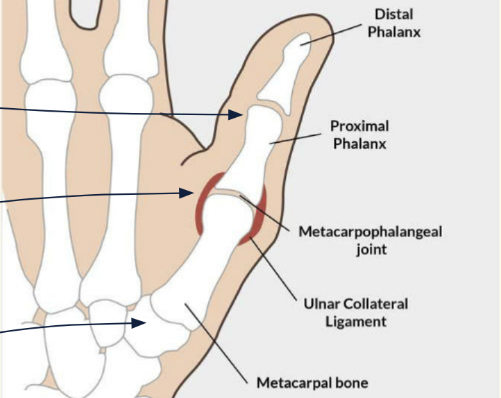
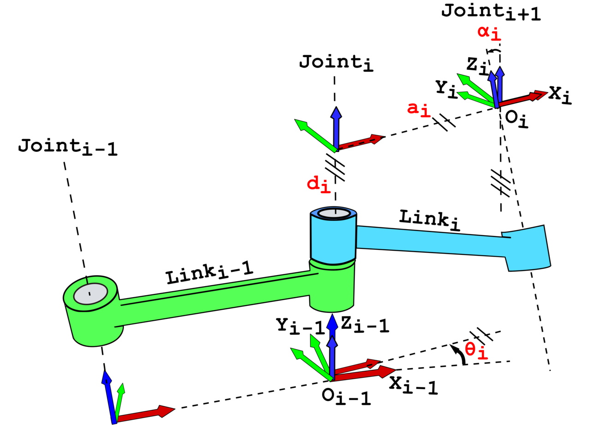
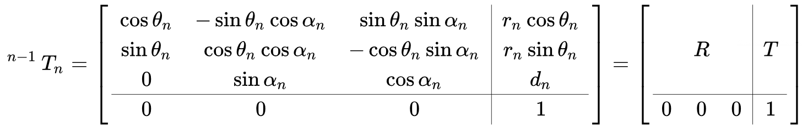
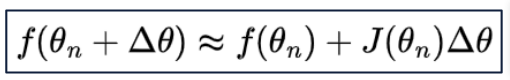
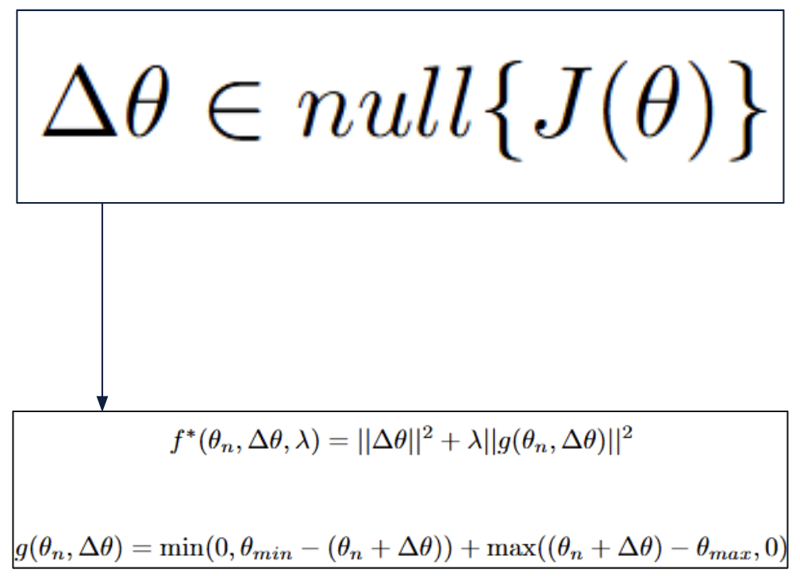
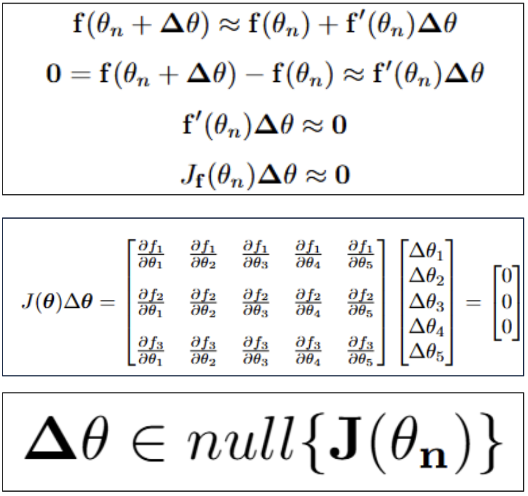
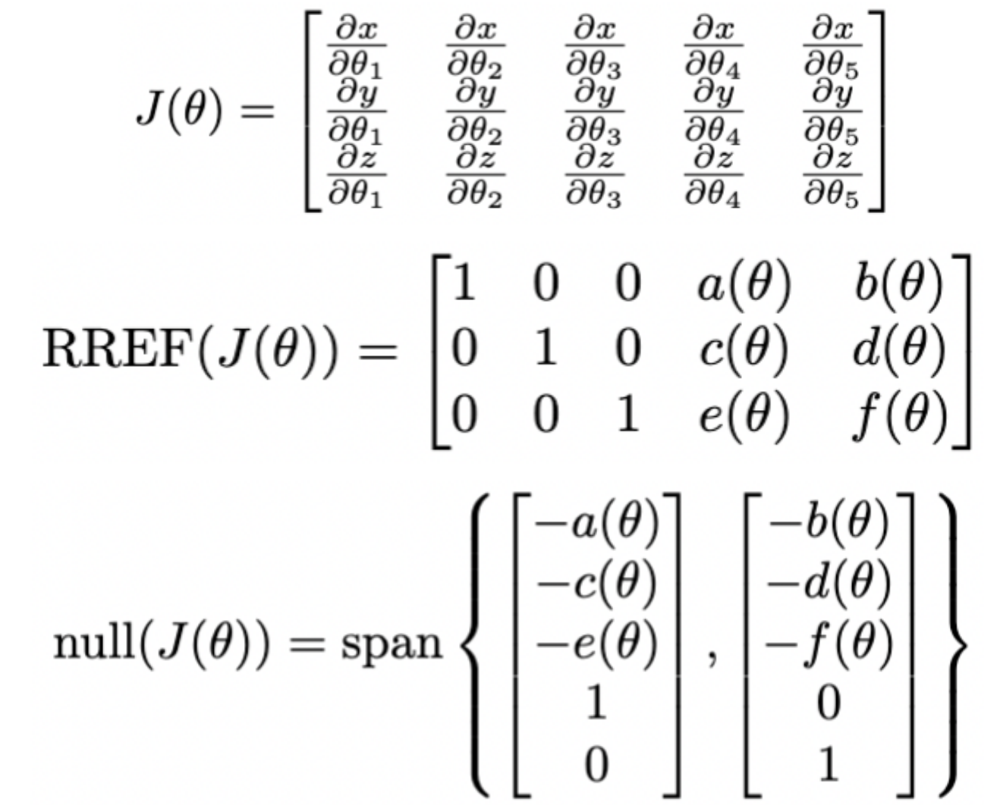
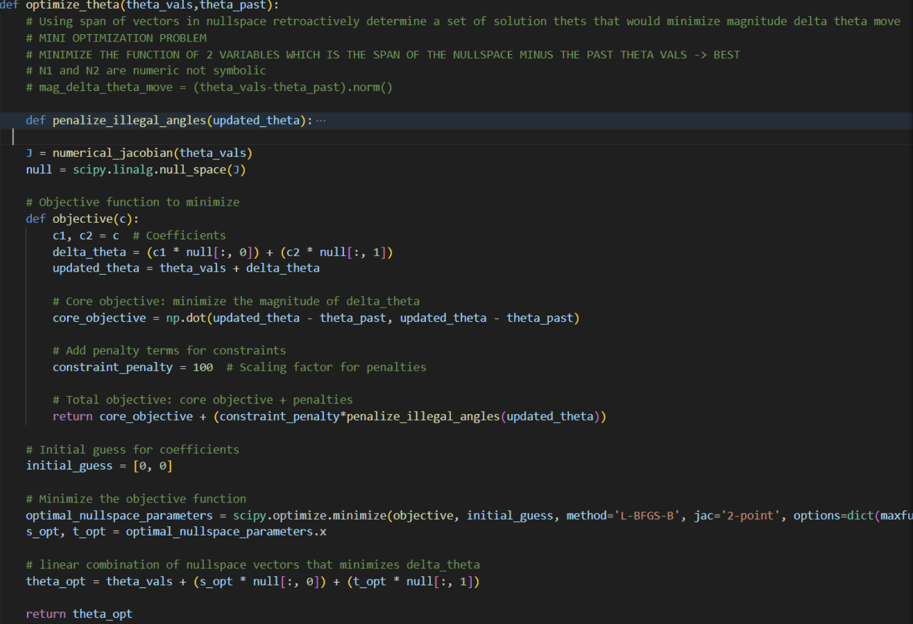
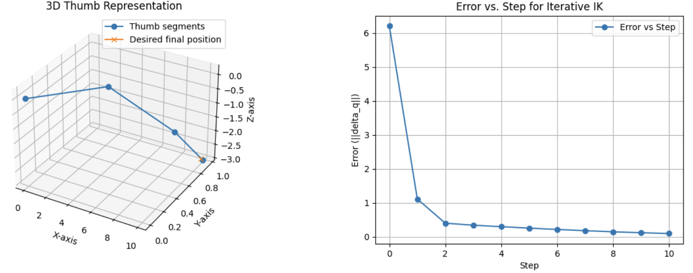

Summary
This project models a human thumb as a constrained multi-DOF kinematic chain and implements a numerical inverse kinematics solver that moves the thumb tip to a 3D target efficiently and smoothly, using a two-stage strategy: stable convergence via a damped least-squares Jacobian pseudoinverse, followed by motion-quality improvement through null-space optimization with joint-limit penalty terms.
- Built forward kinematics for a 5-DOF thumb model using DH parameters
- Implemented iterative IK with damping for numerical stability
- Derived null-space directions and optimized updates to minimize joint movement
- Added constraint penalties to keep motion within plausible joint angle limits
Work presented as part of an E21 final project.
Problem and Objectives
The human thumb is kinematically redundant: multiple joint configurations can place the thumb tip at the same 3D position. A naive IK approach may reach the target, but with inefficient or unrealistic joint motion.
- Build a forward kinematics model for the thumb
- Implement an iterative IK solver to reach target tip positions
- Improve solution quality using null-space reasoning and constraint-aware optimization
Thumb Model and Constraints
The thumb was modeled with biologically motivated joints and joint limits to ensure plausible, anatomically valid solutions.

Forward Kinematics (Denavit–Hartenberg)
To compute thumb tip position from joint angles, we used a standard DH convention. This provides a consistent way to build the homogeneous transforms link-by-link.


Iterative IK — Damped Jacobian Pseudoinverse
IK is solved numerically by iteratively updating joint angles using a first-order linearization of the forward kinematics. Damping improves stability and conditioning: it reduces sensitivity when the Jacobian is ill-conditioned, prevents large joint updates near singularities, and yields smoother convergence.


Null-Space Optimization
Because the thumb is redundant, joint updates exist that change configuration without changing end-effector position. This lets us select among many valid updates and choose one that improves motion quality — smaller joint movement, fewer limit violations.

Computing the null space
The Jacobian was computed numerically and a null-space basis was derived from its reduced row echelon form.

Constraint Handling — Penalty Terms
To keep motion physically plausible, illegal joint angles were penalized during optimization. The objective minimizes joint movement while adding a strong cost whenever angles violate bounds.

Results
The solver converged toward target thumb-tip positions with stable error decay across iterative steps. Resulting trajectories were smooth and remained within anatomical limits.

What I Would Do Next
- Replace penalty-only constraints with constrained optimization (projection or inequality-constrained solvers)
- Improve robustness near singularities using adaptive damping / step-size control
- Add secondary objectives (energy proxy, comfort metrics, joint preference priors)
- Validate against recorded thumb motion data to evaluate realism beyond endpoint accuracy